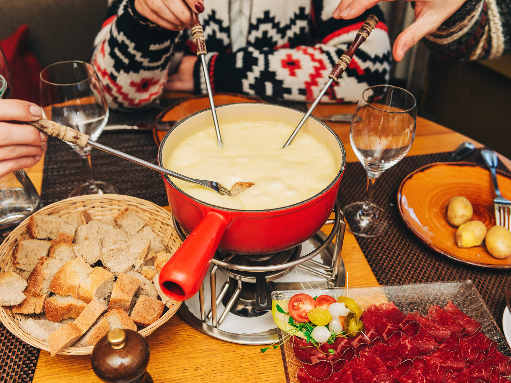

Swiss Fondue

Swiss Fondue
Ingredients
- 1 garlic clove, halved
- 1 pound Gruyère cheese, grated
- 1/2 pound Emmentaler cheese or other Swiss cheese, grated
- 1 cup dry white wine
- 1 tablespoon plus 1 teaspoon cornstarch
- 1 teaspoon fresh lemon juice
- 1 1/2 tablespoons kirsch
- Freshly ground pepper
- Freshly grated nutmeg
Steps
- Rub the inside of a cheese fondue pot or medium enameled cast-iron casserole with the garlic clove; discard the garlic.
- Lightly grease a griddle or frying pan; heat over medium-high heat.Combine the grated Gruyère and Emmentaler with the wine, cornstarch and lemon juice in the fondue pot and cook over moderate heat, stirring occasionally, until the cheeses begin to melt, about 5 minutes.
- Reduce heat to low. Add the kirsch and a generous pinch each of pepper and nutmeg and cook, stirring gently, until creamy and smooth, about 3 minutes; don't overcook the fondue or it will get stringy. Serve at once.